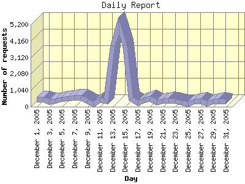

Report generated by Analog 6.0 and Report Magic 2.21
|
Web Server Statistics for "Harish Narayanan (hnarayan) - December 2005" Report generated by Analog 6.0 and Report Magic 2.21 |
The Daily Report identifies the activity for each day within the reporting period. Remember that one page hit can result in several server requests as the images for each page are loaded.

| Day | Number of requests | Number of bytes transferred | Percentage of the bytes | Percentage of the requests | |
|---|---|---|---|---|---|
| 1. | December 1, 2005 | 460 | 21.504 MB | 2.66% | 2.00% |
| 2. | December 2, 2005 | 453 | 12.659 MB | 1.57% | 1.97% |
| 3. | December 3, 2005 | 298 | 18.557 MB | 2.29% | 1.29% |
| 4. | December 4, 2005 | 333 | 12.771 MB | 1.58% | 1.45% |
| 5. | December 5, 2005 | 483 | 13.578 MB | 1.68% | 2.10% |
| 6. | December 6, 2005 | 514 | 53.261 MB | 6.59% | 2.23% |
| 7. | December 7, 2005 | 578 | 34.186 MB | 4.23% | 2.51% |
| 8. | December 8, 2005 | 597 | 61.781 MB | 7.64% | 2.60% |
| 9. | December 9, 2005 | 342 | 32.020 MB | 3.96% | 1.49% |
| 10. | December 10, 2005 | 169 | 16.322 MB | 2.02% | 0.73% |
| 11. | December 11, 2005 | 420 | 20.603 MB | 2.55% | 1.83% |
| 12. | December 12, 2005 | 333 | 23.062 MB | 2.85% | 1.45% |
| 13. | December 13, 2005 | 3,845 | 66.689 MB | 8.25% | 16.71% |
| 14. | December 14, 2005 | 5,116 | 97.598 MB | 12.07% | 22.24% |
| 15. | December 15, 2005 | 3,880 | 71.795 MB | 8.88% | 16.87% |
| 16. | December 16, 2005 | 507 | 21.583 MB | 2.67% | 2.20% |
| 17. | December 17, 2005 | 240 | 4.648 MB | 0.57% | 1.04% |
| 18. | December 18, 2005 | 371 | 26.202 MB | 3.24% | 1.61% |
| 19. | December 19, 2005 | 510 | 19.121 MB | 2.37% | 2.22% |
| 20. | December 20, 2005 | 288 | 8.710 MB | 1.08% | 1.25% |
| 21. | December 21, 2005 | 339 | 20.184 MB | 2.50% | 1.47% |
| 22. | December 22, 2005 | 397 | 17.691 MB | 2.19% | 1.73% |
| 23. | December 23, 2005 | 358 | 22.100 MB | 2.73% | 1.56% |
| 24. | December 24, 2005 | 219 | 11.473 MB | 1.42% | 0.95% |
| 25. | December 25, 2005 | 138 | 6.687 MB | 0.83% | 0.60% |
| 26. | December 26, 2005 | 306 | 8.911 MB | 1.10% | 1.33% |
| 27. | December 27, 2005 | 365 | 17.258 MB | 2.13% | 1.59% |
| 28. | December 28, 2005 | 190 | 16.878 MB | 2.09% | 0.83% |
| 29. | December 29, 2005 | 314 | 14.458 MB | 1.79% | 1.36% |
| 30. | December 30, 2005 | 343 | 16.488 MB | 2.04% | 1.49% |
| 31. | December 31, 2005 | 297 | 19.667 MB | 2.43% | 1.29% |
Most active day December 14, 2005 : 4,866 pages sent. 5,116 requests handled. 102,338,443.00 served.
Daily average: 742 requests handled. 26.079 MB served.
This report was generated on January 5, 2006 20:48.
Report time frame December 1, 2005 00:03 to December 31, 2005 23:42.
| Web statistics report produced by: | |
 Analog 6.0 Analog 6.0 |  Report Magic 2.21 Report Magic 2.21 |